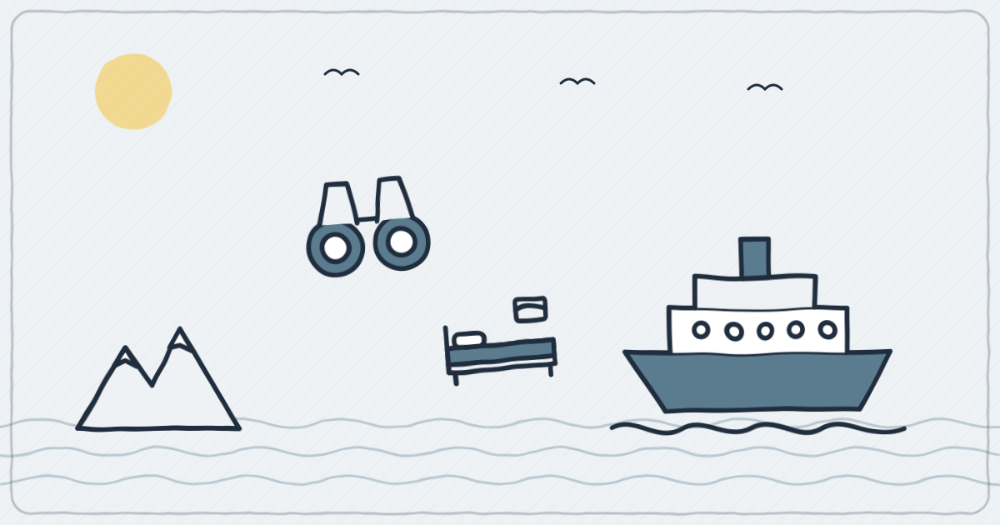

Which Side of the Ship Is Best for Alaska? Cabin and Deck
Side matters less than people think: ships turn at the glaciers so both sides see them, and on a round trip from Vancouver the coast is on each side in turn. What matters more is a balcony on a mid-to-upper deck, midship or aft, with the exact cabin number checked against the deck plan for lifeboats and panels.

Which side of the ship for Alaska is the most-asked cabin question and the least important one. Ships turn at Glacier Bay, Hubbard and the Tracy Arm glaciers so that both sides get the view, and a round trip from Vancouver sails up one side of the Inside Passage and down the other. The decisions that actually change what you see from your cabin are balcony or not, which deck, midship or aft, and whether the specific cabin number has a lifeboat under it. This note takes them in that order.
Port or starboard: what the route actually does
Think about the shape of the trip rather than the compass.
Round trip from Vancouver or Seattle. You sail north through the Inside Passage with the mainland on one side and the islands on the other, then come back the same way facing the other direction. Over the week, each side of the ship gets roughly the same amount of coastline. Pick by price and position, not side.
One-way northbound (Vancouver to Whittier or Seward). The mainland and the biggest mountains are on the starboard side more of the time, and the open Gulf of Alaska crossing at the end has land on the starboard side only. Starboard has a slight edge.
One-way southbound. The reverse: port side faces the mainland more often.
At the glaciers. The captain holds the ship in front of the ice and rotates it slowly, usually a full turn over an hour or more, so a cabin on either side sees the face. The open decks forward are still the best place to stand for calving, because you can move.
Is a balcony worth it on an Alaska cruise?
Yes, more than on any other itinerary. Alaska gives you a glacier day, long hours of scenic cruising through narrow channels, and in midsummer, daylight until late evening. A balcony lets you watch all of it in a dressing gown with a coffee rather than in a parka at a crowded rail, and you can hear the ice crack from your own chair.
If the budget will not stretch, an oceanview cabin on a low deck is the honest middle option. The big window shows plenty of coast and puts you close to the water for wildlife, but you cannot step outside, and the glass makes the glacier feel like television. Plan to spend the scenic hours on the open decks.
Every Alaska cabin type and what you will actually see
| Cabin type | What you see | Best for | Check before booking |
|---|---|---|---|
| Inside | Nothing (a virtual window on some ships) | Tight budgets, people who live on deck | That the price gap to oceanview is real |
| Oceanview, low deck | Coastline through a window, close to the water | Wildlife spotting on a budget | Window not blocked by a lifeboat davit |
| Obstructed-view balcony | Partial view past a lifeboat | Fresh air at a discount | Photos of that exact cabin; some are almost blind |
| Standard balcony, midship | One side, clear | Most couples | Deck plan for overhangs from the deck above |
| Aft balcony | The wake and both shores behind you | Scenery and photos | Vibration tolerance; funnel soot on a few ships |
| Forward-facing balcony | Straight ahead, dramatic in channels | Glacier approaches | Wind; some lines close them in rough water |
| Corner or wraparound suite | Two directions at once | Once-in-a-lifetime trips | Sells out a year ahead |
Which deck: high enough to see, low enough to spot
Deck height trades two things. Higher decks see over the ship's own superstructure to the whole mountain range and down into the fjord. Lower balcony decks sit nearer the water, where a humpback's blow, a raft of sea otters or a seal on an ice floe is far easier to pick out. A mid-to-upper balcony deck balances both, and on most ships that is also where the cabins are quietest.
Decks to avoid
The deck directly under the pool deck or the buffet: chairs scraping at dawn, exactly when Alaska is at its best. The deck directly above the theatre or a nightclub: the reverse problem. The lowest balcony deck on some ships, where the balconies are set back behind a solid steel wall and you see the view only standing up. If a cabin turns out to be noisy, the ship can sometimes move you, but on a sold-out July sailing there is nowhere to move to, so choose well first.
Midship, forward or aft
Midship moves least, which only matters for someone who is motion-sensitive or for a child who gets carsick; the Inside Passage is sheltered water and the one open stretch, the Gulf of Alaska on one-way sailings, is a single night. Forward cabins get the most wind on scenic days and some lines lock the forward balcony doors in weather. Aft cabins are the quiet secret of Alaska: a deeper balcony, both shores in view, and the wake stretching back down the channel you have just come through. Photographers book them first, partly because a private rail spares them the jostling and photo manners of the open decks on glacier day.
The obstructed-view trap
Lifeboats hang along the sides of every big ship, and the balconies beside or just above them lose part or most of the view. Lines usually sell these as "obstructed" or "partial view" at a discount, but not every overhang, pillar or davit is labelled, and a few "unobstructed" cabins sit at the edge of a lifeboat cluster. Some ships also use a solid lower panel on the railing instead of glass, so the view from a chair is sky and the view from standing is Alaska.
The fix takes ten minutes:
- Open the deck plan for your ship and find the lifeboat symbols on the deck below the one you are considering.
- Rule out any cabin within two cabins of a lifeboat cluster unless it is priced as obstructed.
- Search the exact cabin number online; passengers post balcony photos for most cabins on most ships.
- Check whether the railing is glass or solid panel in those photos.
- Only then book the number, not the category.
Booking timing for the good cabins
Aft balconies, corner suites and the unobstructed mid-deck cabins go first on Alaska sailings, and July and August fill fastest because Canadian and US school holidays line up. Flights are the opposite: they rarely sell out and are cheapest later, so lock the cabin first and read when to book flights for a 2027 Alaska cruise for the timing. If you want a specific cabin, book when the season opens, usually 12 to 18 months ahead, and take a refundable deposit so a change of plan costs nothing. Booking late means taking whatever is left, which on a peak sailing tends to be the cabins above the lifeboats.
If you are deciding between a Vancouver departure and a Seattle one, the passport question and the ESTA rules can tip it, and the same ships sail from Vancouver to Hawaii in the shoulder seasons if the cabin you want is gone.
Want this checked for your own sailing? A licensed cruise consultant can price it up and answer questions for free, with no obligation.
Ask a cruise expert →Category gets you close; the cabin number gets you the view
Two balconies at the same fare can give completely different weeks: one with every fjord framed from the chair, another with the roof of a lifeboat. Choose the category by budget, then spend the ten minutes on the number. It is the cheapest upgrade on an Alaska cruise and the only one nobody charges for.
Still wondering?
Is port or starboard better for an Alaska cruise?
On a Vancouver round trip, neither: you sail up one side of the Inside Passage and back down the other, so each side gets the coast for half the trip. On a one-way northbound sailing the starboard side faces the mainland more often, and southbound the port side does. At the glaciers the ship rotates so everyone gets a look.
What deck is best for an Alaska cruise?
A mid-to-upper balcony deck. High enough to see over the ship's own structure to the mountain ranges, low enough that a whale's blow at the surface is still easy to spot. Avoid cabins directly under the pool deck or buffet if you want quiet early mornings, which in Alaska are the best viewing hours.
Are aft cabins worth it on an Alaska cruise?
For scenery, often the best on the ship. An aft balcony looks down the wake and takes in both shores of a channel at once, and many are deeper than standard balconies. The trade-offs are a little engine vibration and, on a few older ships, funnel soot on the railing.